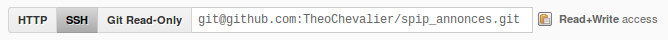
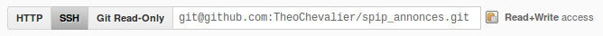

Cloner un dépôt

$ git clone git://github.com/TheoChevalier/spip_annonces.git

$ git clone git@github.com:TheoChevalier/spip_annonces.git
Un logiciel de gestion de versions permet de stocker un ensemble de fichiers en conservant la chronologie de toutes les modifications qui ont été effectuées dessus.
Ça fonctionne aussi pour un plugin SPIP.
$ git config --global user.name "Theo Chevalier"$ git config --global user.email "contact@theochevalier.fr"
$ ssh-keygen -t rsa -C "contact@theochevalier.fr"Ajoutez votre clé publique à votre compte Github
ssh -T git@github.comHi TheoChevalier! You've successfully authenticated
$ git clone git://github.com/TheoChevalier/spip_annonces.git

$ git clone git@github.com:TheoChevalier/spip_annonces.git
$ git status//Fichiers modifiés
$ git diff//Modifications
$ git add *// .gitignore
$ git commit -am "Commit message"
$ git push
Houu… C'était dur !

Nan, CTRL+Z, vous oubliez.
$ git checkout
ou
$ git checkout chemin/vers/monfichier
$ git reset --hard HEAD^
ou
$ git reset --hard d6d9892
$ git log
$ git revert d6d9892
$ git pull
$ git branch super_idee
$ git branch
* master
super_idee
$ git checkout super_idee
$ git merge super_idee
Exemple de conflit :
<<<<<<< HEAD:file.txt
Hello world
=======
Goodbye
>>>>>>> 77976da35a11db4580b80ae27e8d65caf5208086:file.txt
$ git tag v1.1 77976da35a11db4580b80ae27e8d65caf5208086
Fork you.